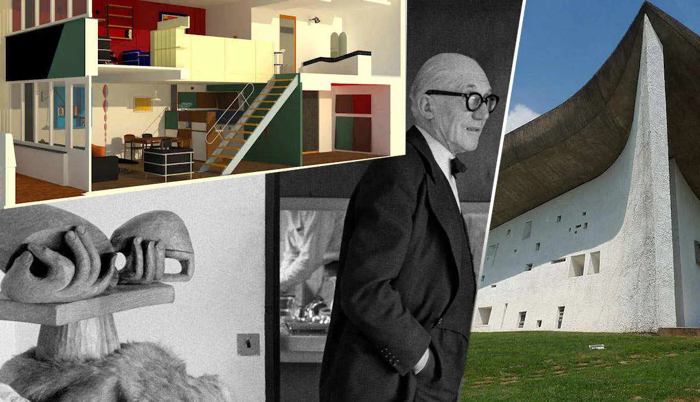
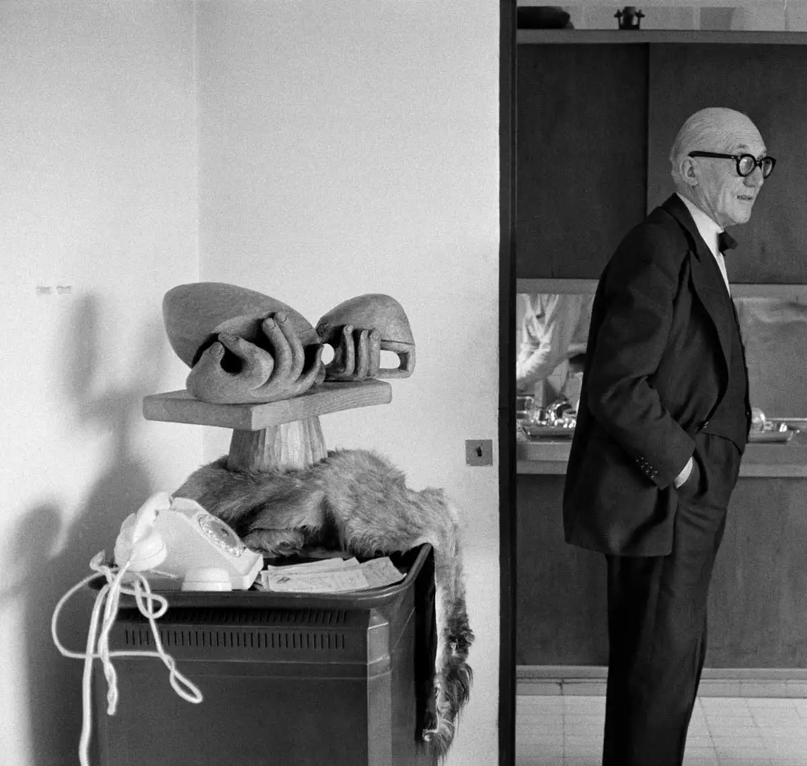
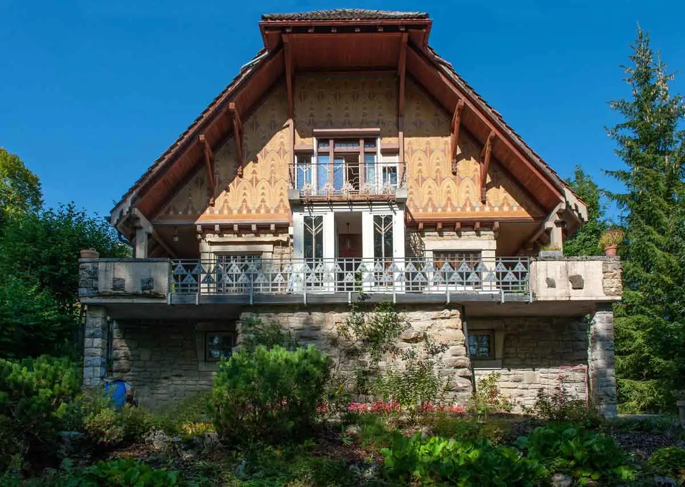
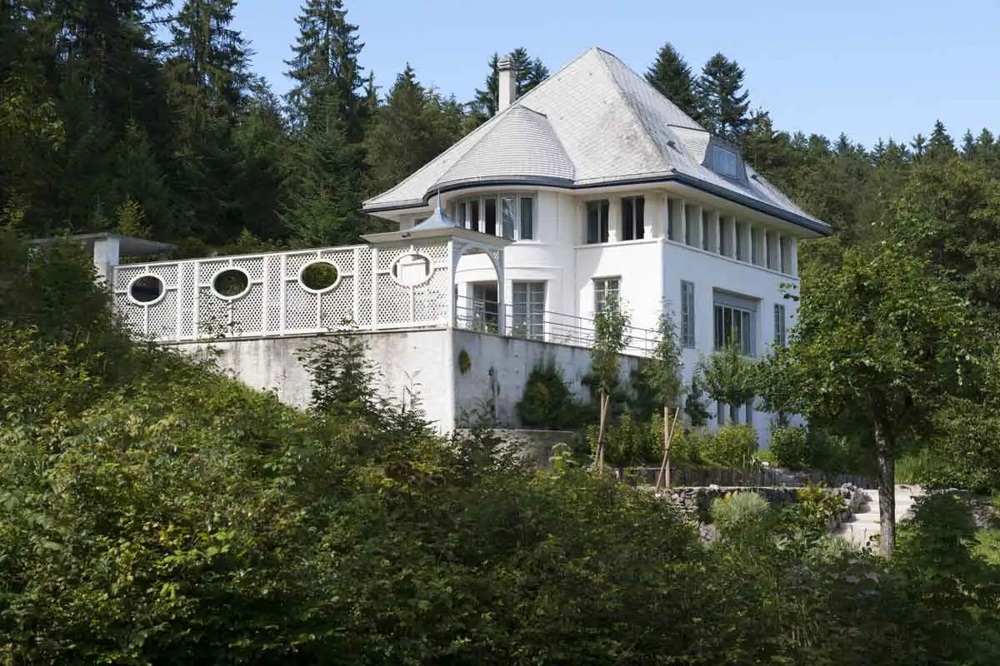
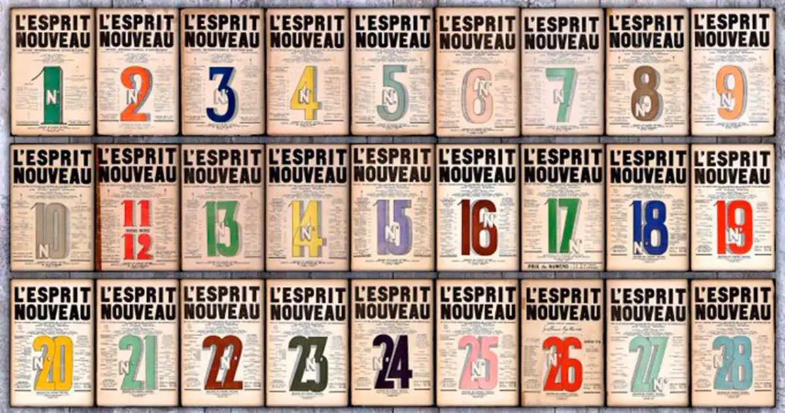
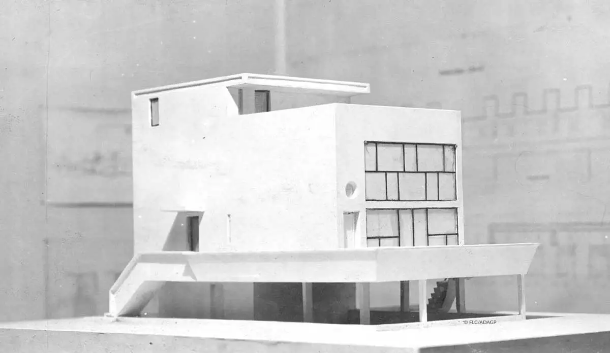

Le Corbusier: The Multitalented Pioneer of Modern Architecture
Le Corbusier was a multi-talented modern architect. Discover what defined his architectural style.

Born under the name of Charles-Edouard Jeanneret, this architect eventually made history as Le Corbusier. It’s a name that now represents a man of many talents. Not only was Le Corbusier a pioneer of modern architecture, he also was a designer, painter, urban planner and writer. Through a short biography, this article will explore who Charles-Edouard Jeanneret was before he became Le Corbusier, and how he developed into the great architect we know today. An analysis of his works will subsequently illustrate what the outcome was of his brilliant mind and pioneering ideas.
Le Corbusier's early life and career

Charles-Edouard Jeanneret was born on October the sixth, 1887 in La Chaux-des-Fonds in Switzerland. La Chaux-des-Fonds is a small town in the mountains of the Swiss Jura region. It was a sober, protestant town, which had been known for its watchmaking since the 18th century. Le Corbusier’s father in fact was an enameller and engraver of watches himself. As the trade was passed on from father to son for generations, it was also passed on to Le Corbusier. For this reason, Le Corbusier continued his primary education with a study at the École des Arts Décoratifs (School of Decorative Arts). Besides learning enamelling and engraving, this school also taught the young Charles-Edouard in art history, drawing and Art Nouveau aesthetics. Le Corbusier seemed to have had a good connection with his teacher, Charles L’éplattenier, whom he later called his only teacher.
It was in fact Charles L’éplattenier who first saw an architect in Le Corbusier. Something that granted the latter the opportunity to join the ‘Cour Supérieur’. This was a program of the École des Arts Décoratifs that allowed the best students to get acquainted with architecture and interior design. L’éplattenier later made sure that the young Corbusier also gained some practical experience in the architectural field, by having him practice on local projects. In 1905 and 1906, when Le Corbusier was eighteen years old, he designed his first house, the Villa Fallet, together with the architect René Chapallaz. The Villa Fallet was in fact the first of six villas in his hometown that he helped designing. All of these were built in a regional style that was mixed with Art Nouveau characteristics. Later, the style of this mountain chalet would be referred to as the ‘Le Style Sapin’, or in English the ‘Pine Tree style’. The pattern that covers the top wall of the Villa Fallet, is one of the style elements of the Style Sapin.

Between 1907 and 1911, Le Corbusier travelled through several countries in central Europe and the Mediterranean, among which France, Austria, Italy, Greece and the Balkan Peninsula. These travels were in fact long study trips, during which Le Corbusier also worked at a number of ateliers. In Vienna, for example, he worked at Josef Hoffmann’s atelier for a while, who was one of the architects of the famous Vienna Secession group. By moving in the artistic circles of Vienna, Le Corbusier subsequently also met the Austrian architect Adolf Loos. The modernist ideas of whom, as would become clear later on, left a strong mark on Le Corbusier.
Someone else who influenced Le Corbusier’s ideas, was the architect and reinforced concrete specialist Auguste Perret. After Le Corbusier worked at Perret’s engineering office, he came to think of reinforced concrete as the material of the future. The new vision on architecture that Le Corbusier had gained during his time in Vienna and Paris, was reinforced even further when he ended up working at the atelier of leading architect Peter Behrens in Neubabelsberg. Here, the young architect did not only work closely together with Behrens himself, but also with other upcoming architects, like Mies van der Rohe and Walter Gropius.

After returning home to La Chaux-des-Fonds in 1911, Le Corbusier designed his first house as an independent architect. The house is called the Maison Blanche, but it’s also known as Villa Jeanneret-Perret. What is interesting about the Maison Blanche is that in its design, Le Corbusier broke with the ‘Style Sapin’. In contrast to this former style, the exterior of the Maison blanche didn’t consist of any decorations. Next to this, the interior saw a much more open plan than the villas Corbusier had helped designing before his travels and work experience. In the use of the windows and the lightness of the interior, the influence of the Mediterranean style of architecture and the modern architects he met, clearly shines through. A fun fact is that Le Corbusier designed the Maison Blanche for his parents, and that he lived there himself for several years.
The birth of Le Corbusier in Paris

The Maison Blanche ended up being one of in total six villas that Le Corbsusier designed for his home town. When the designing and building of the properties was finished, he decided to move back to Paris, and permanently settle there. It was in 1916, when Le Corbusier was twenty-nine years old, that he decided to make the move. In Paris, Le Corbusier, who had already developed modernist ideas about both architecture and other artforms, was the perfect candidate to join the avant-garde circles. Something that actually happened after he met painter and publicist Amédée Ozenfant, who introduced him to other avant-gardes artists. Among these were Cubists, Futurists, and Dadaists. It was the beginning of an interesting and important phase in Le Corbusier’s Career.
One of the first important things that happened during this phase was that Le Corbusier and Ozenfant came up with their theory of Purism. Purism can be seen as a later form of Cubism, which rejected the decorative tendency of earlier cubist art and strived for a return to clear, simple shapes. In 1918, the two men published a manifesto called Après le Cubisme (After Cubism), which explains the theory of Purism to the public. In 1920, two years after the publication of their Manifesto, Le Corbusier and Ozenfant also founded L’Esprit Nouveau (The New Spirit). This was a monthly magazine for avant-garde ideas, which explored the sources and the direction of contemporary art. In a different way than the manifesto had done, L’Esprit Nouveau was evidence too of Le Corbusier’s pioneering ideas. From its articles resonated a clear fight against former styles and the use of decorations, as well as an appreciation of simplicity and functionalism.

Apart from the fact that Le Corbusier developed himself as a writer during this phase, he also became two other things: a painter and Le Corbusier. Let’s start with the latter, which might sound rather strange. Le Corbusier literally became known as Le Corbusier when he and Ozenfant decided to sign l’Esprit Nouveau with pseudonyms. Charles-Edouard Jeanneret chose the name of his grandmother, Lécorbésier, which he then altered to be Le Corbusier. However, apart from it being just a pseudonym, it might also have been a way for the architect to better represent the person and the artist he had grown out to be. The fact that he continued working under the name Le Corbusier, also outside of l’Esprit Nouveau, might support that idea. Even though he first signed his paintings with Jeanneret, from the 1930s onwards he continued to sign them with Le Corbusier. The same applies to the various books he wrote during his lifetime, which he published under his new name (see examples below).
After this introduction to Le Corbusier’s early life, the next paragraphs will analyse some of his architectural designs. In general, Le Corbusier’s career is divided into a pre-war, and a post-war period. For that reason, the mentioned paragraphs will look at designs from both the 1920s and ‘30s, as well as the 1950s and 60’s. This way, it can be determined what the similarities and differences were in Le Corbusier’s style in both these periods.
Le Maison Citrohan

Read the full article on www.thecollector.com and discover Le Corbusier's designs.